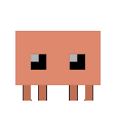
核心手法：同一容器宽高+圆角插值，hover 展开，元素在形变中保持位置。
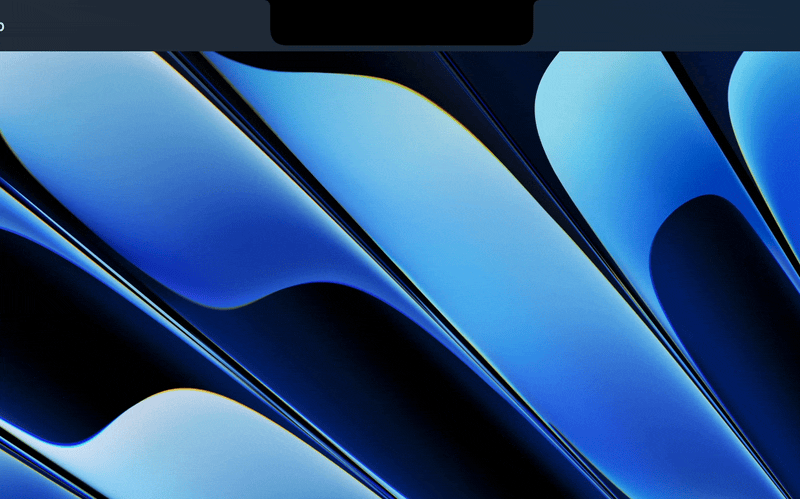
刘海悬停弹性张开为音乐/日历/文件架面板，统一 spring 曲线（源码：Animation.spring(.bouncy(duration: 0.4))），全屏 App 时自动退场。
「胶囊 morph 成面板」封装成可直接集成的 SwiftPM 库（Loop 作者出品）。
无刘海机型降级为悬浮胶囊——同一状态机的第二种皮肤，非激活 NSPanel 实现。
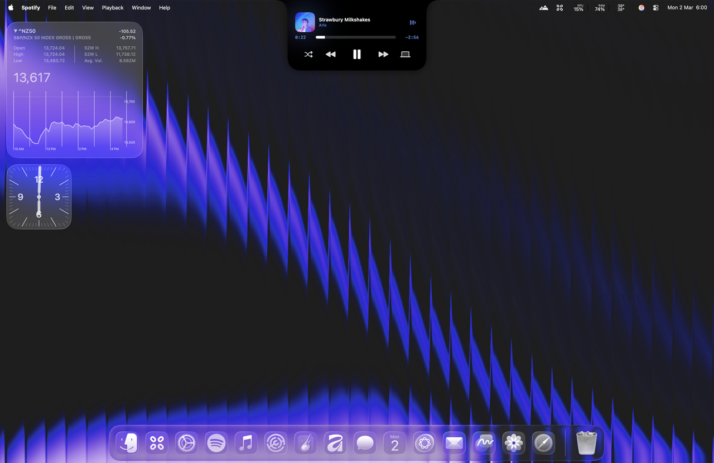
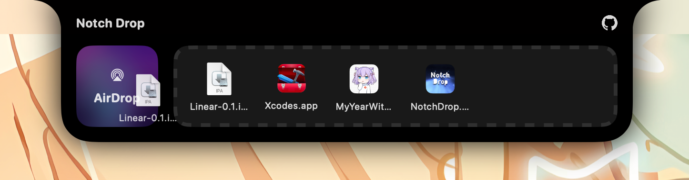
状态压缩：一只像素形象 + 颜色 + 计数 = 全部 agent 状态。

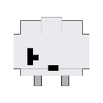
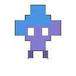
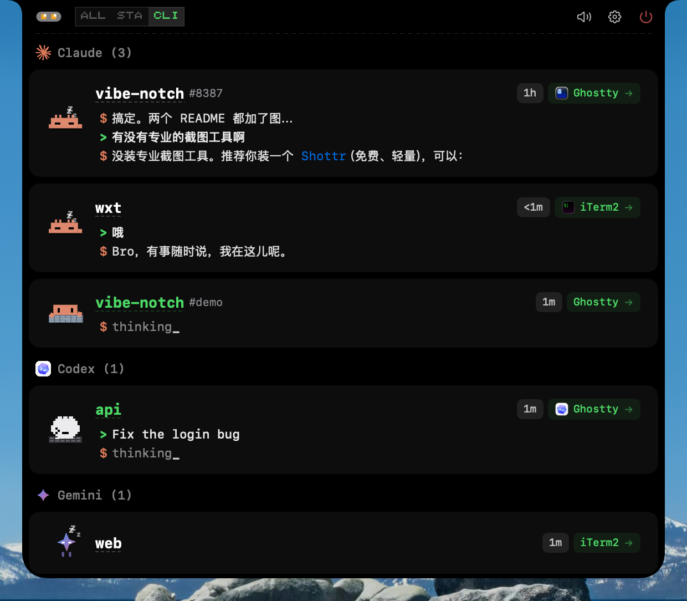
每个 AI CLI 一只像素吉祥物坐在刘海里，工作/等待/报错各有动图；15 个 agent、快捷键审批。吉祥物 GIF 规格可直接参考（MIT）。
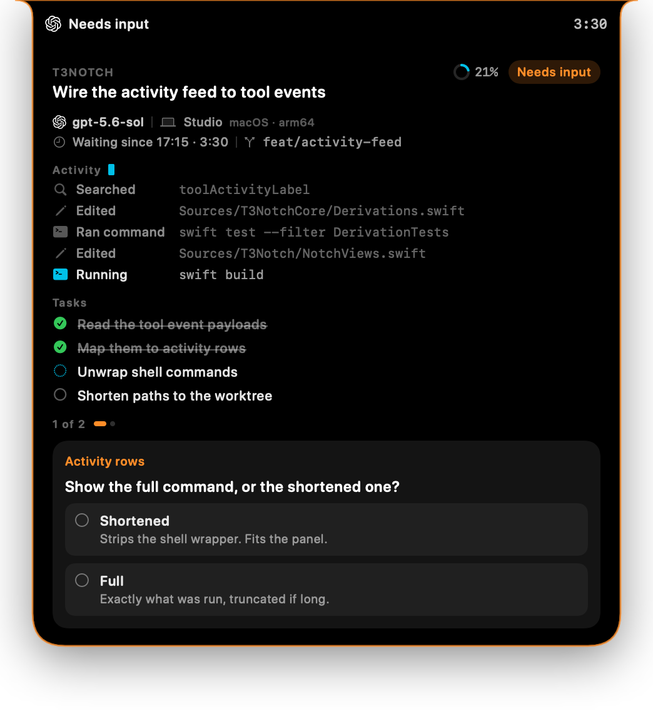
agent 需审批时刘海自动展开，问题在刘海下直接回答——审批闭环的开源样本。
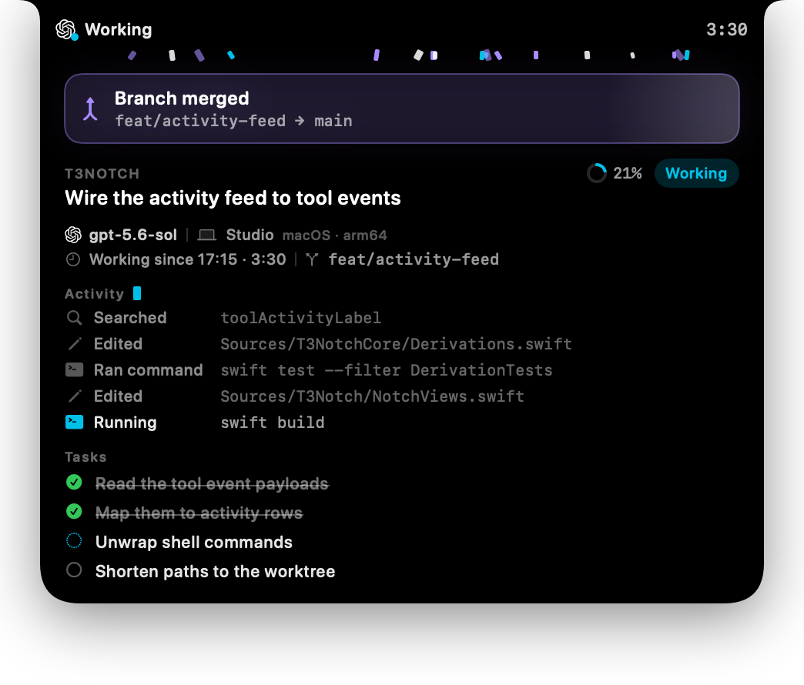
五色状态语义 + 刘海审批的开创者，但全仓库无 GIF——形变工艺与上面几项的差距即 60 分的由来。
核心手法：交互界面跟随操作上下文出现，用完消失，不占用常驻空间。
按住触发键，径向菜单围绕光标弹簧展开，拖动方向即窗口去向。源码：Loop/Window Action Indicators/Radial Menu/
窗口拖向屏幕边缘「收进」缝里，悬停弹回——常驻面板的收纳参照（Stashing/StashManager.swift）。
纯 shell 脚本驱动的 bar item 弹跳/滑动动画——脚本也能做出弹簧感。
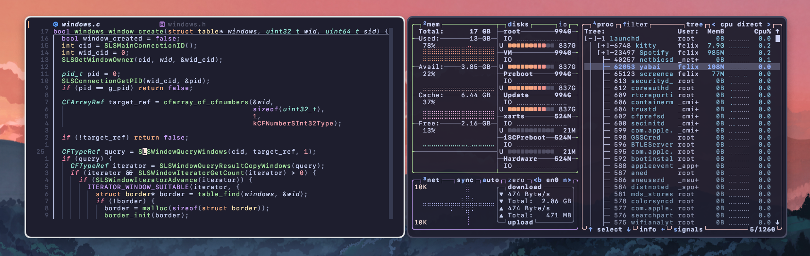
焦点切换瞬间窗口边框变色/渐变——用 SkyLight 私有 API 建无边框覆盖窗的范式（私有 API 不可上架，仅原理参考）。
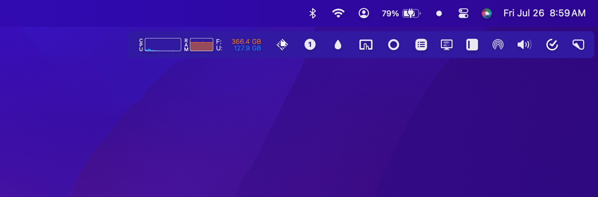
菜单栏隐藏区整体滑出为第二条工具条；菜单栏可做圆角/渐变/半透明（项目已近一年未更新，star 仍涨）。
SlimHUD 把音量 HUD 的 7 种进出场动画逐一对比——选「长出-回弹-定时退场」节奏的最佳参考。
fade / grow / pop-in-fade-out / side……HUD 进出场动效的可视化目录（每张 <40KB）。
· MediaMate 官方演示——HUD「比系统更像系统」，Focus 模式自动隐藏、按 App 排除
· Alcove——品类形变天花板，官网即演示
macOS 26 官方玻璃 API + 社区 demo 集，胶囊⇄面板的官方路径是 GlassEffectContainer + glassEffectID。
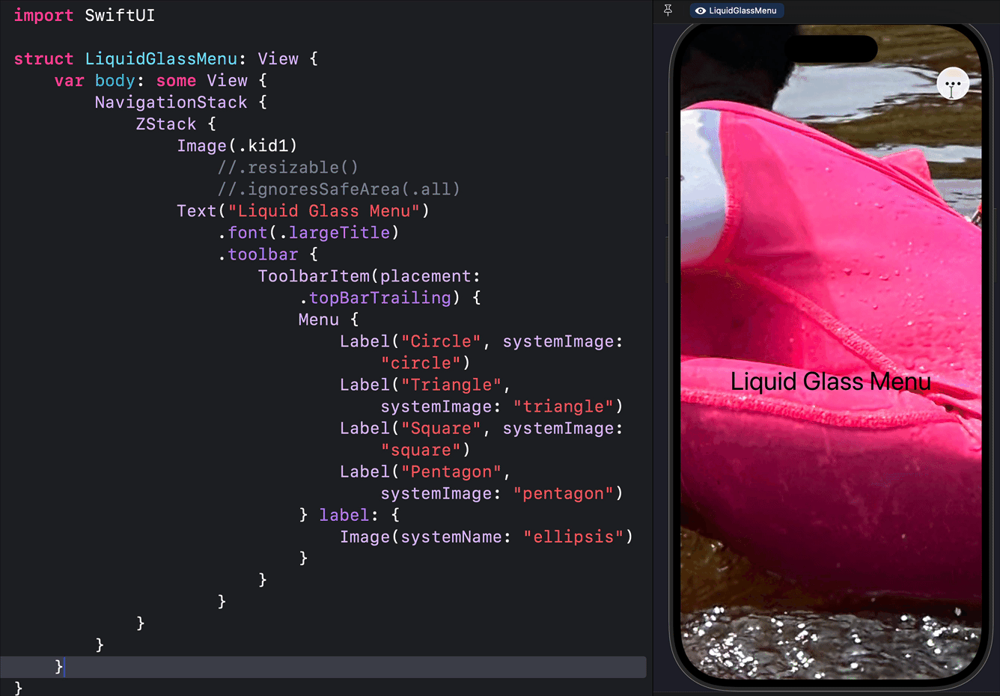
玻璃菜单展开。十余个带 SwiftUI 源码的玻璃形变样例，每效果一个 .swift 文件可抄。
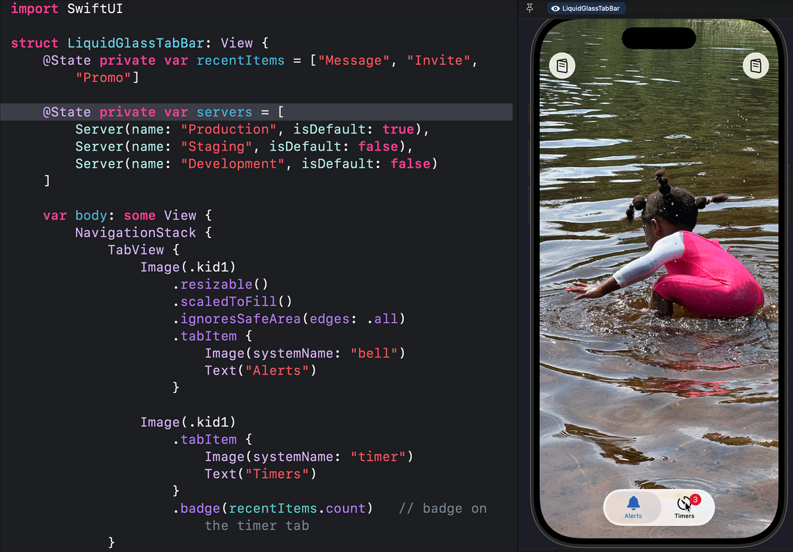
Tab 切换时的果冻挤压拉伸——玻璃材质 + 形变的组合手感。
matchedGeometryEffect：缩略图无缝 morph 成详情大卡——「胶囊长出面板」的最简实现（共享 @Namespace）。
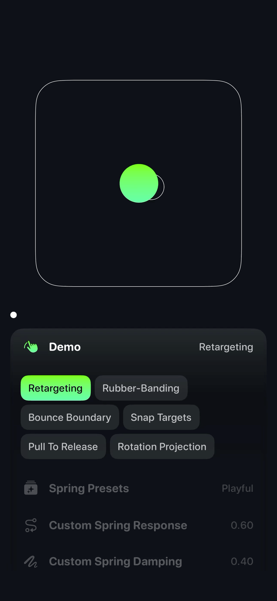
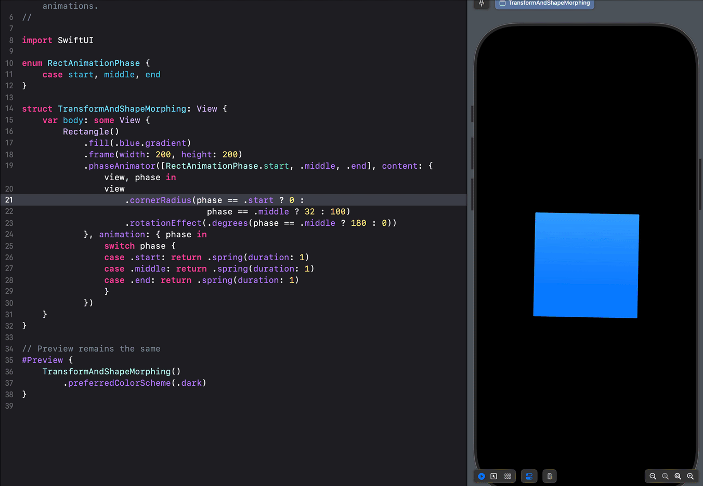
弹簧参数（response/damping/blendDuration）可视化速查词典 + 形变样例。
· .glassEffect() / GlassEffectContainer / NSGlassEffectView
· WWDC25-323（19:51 玻璃 morph 演示）· WWDC25-337（SF Symbols 7 Draw On / Variable Draw）
· 缓动曲线工具：easings.net · cubic-bezier.com
Emil Kowalski（ex-Vercel/Linear）：可打断、来路即去路、弹簧接续手势——桌面端同样成立。
「A static screen is a dead screen」：idle 呼吸 + 环境交互行为，比循环动画更有活物感。
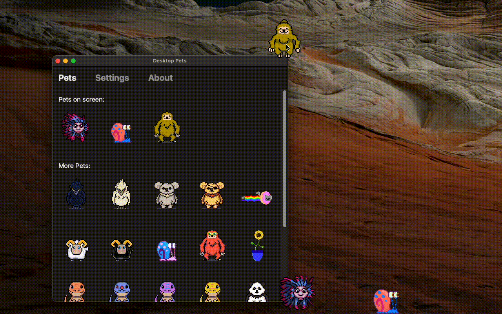
SwiftUI 逐帧精灵动画 + 透明置顶窗：小恐龙在桌面闲逛爬边——像素桌宠的最小可读实现。
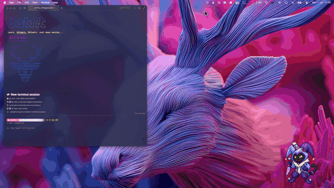
桌宠对 Claude Code 等 agent 活动做出反应，右键弹出等级/XP 面板——桌宠 × 工作台一体。
· mochi ★112 MIT——吃回收站文件长大的像素宠：系统事件 → 宠物情绪/成长，「事件驱动生命感」
· NonactivatingPanelBug + 配套博客——浮于一切之上却不抢焦点的 NSPanel 配置，常驻 HUD 的窗口层答案
· LyricsX ★5.2k MPL-2.0——桌面歌词浮层：置顶 + 点击穿透 ⇄ 可交互切换的成熟实现